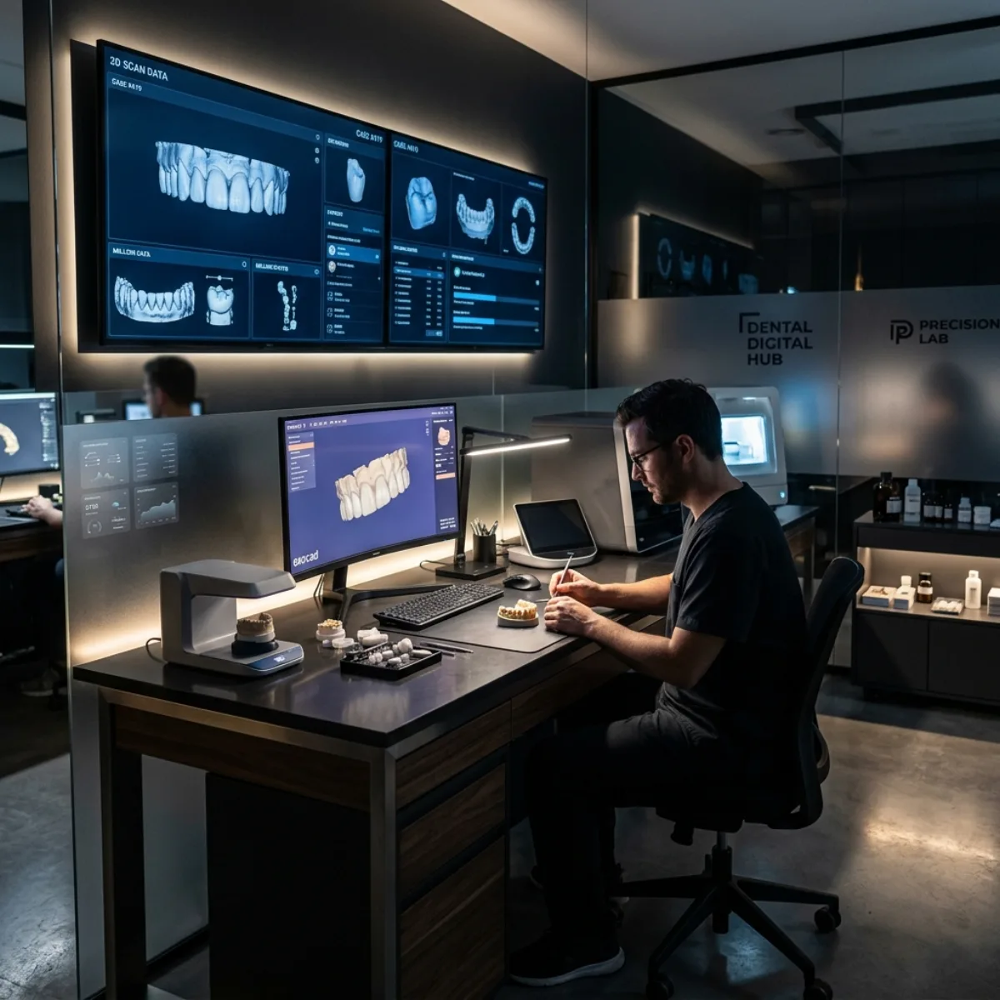
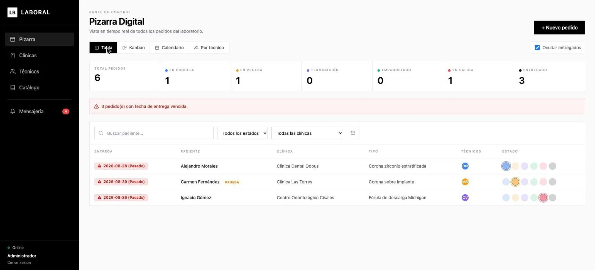
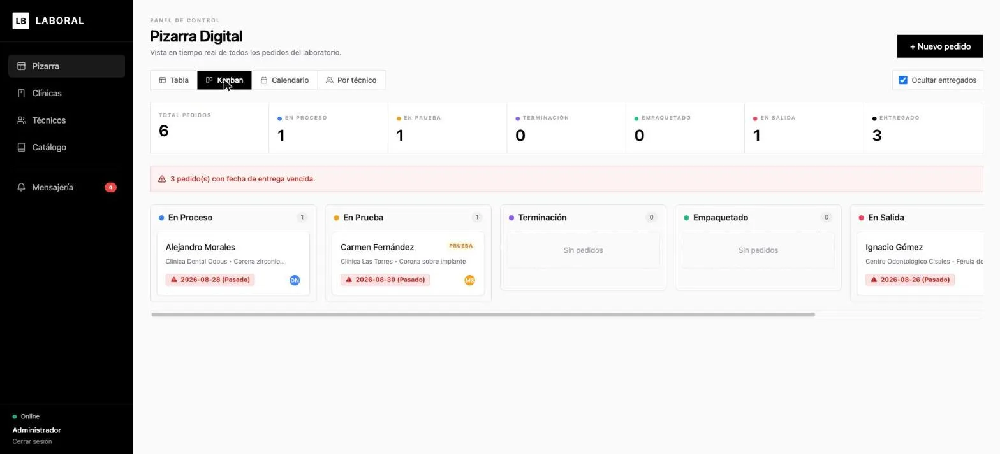
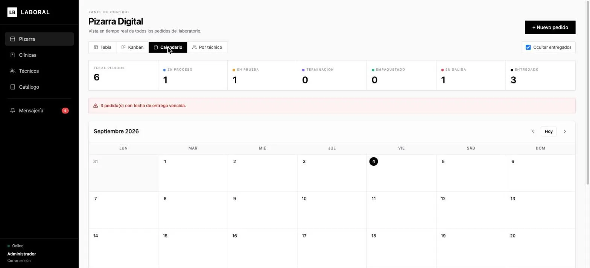
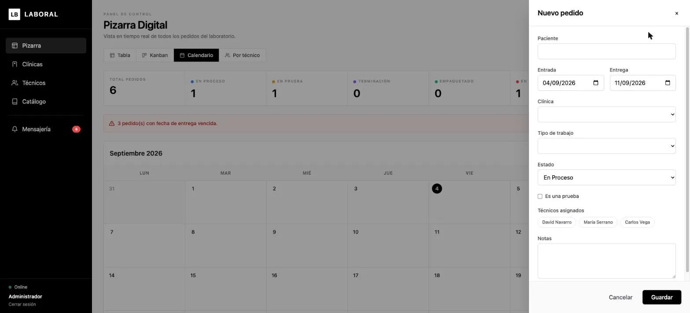
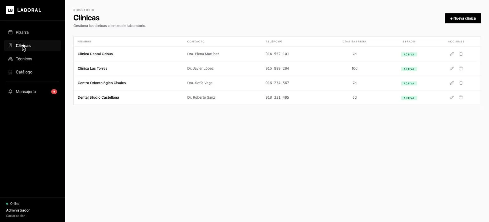
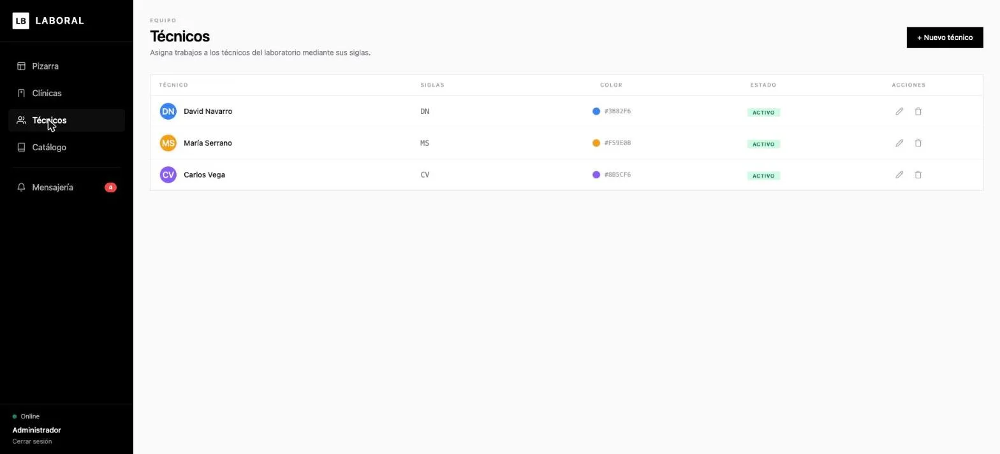
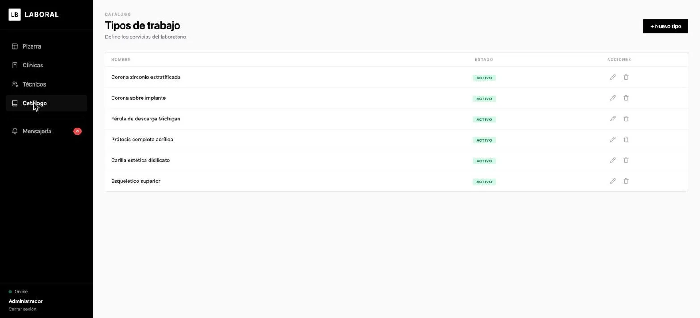
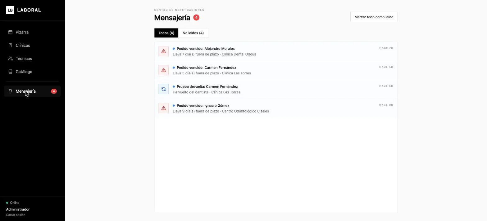

Resumen
Laboral es una aplicación full-stack desarrollada para un laboratorio dental, encargada de digitalizar por completo el flujo de pedidos entre el laboratorio y las clínicas que le envían trabajo. Sustituye la clásica pizarra física por un panel en tiempo real, con frontend en Angular y backend en Spring Boot. Proyecto real para cliente, actualmente en producción.
Objetivo del proyecto
El laboratorio gestionaba sus pedidos con una pizarra física y notas manuales: sin trazabilidad, sin historial y con riesgo constante de perder información sobre plazos de entrega. Laboral centraliza todo ese flujo en un panel digital compartido por administración y técnicos, con alertas automáticas de pedidos fuera de plazo y actualización en tiempo real entre todos los puestos conectados.
Gestión de pedidos — Pizarra digital
El núcleo de la aplicación es la pizarra de pedidos, con cuatro vistas intercambiables sobre los mismos datos:
- Tabla: listado filtrable por estado y clínica, con aviso visual de entregas vencidas.
- Kanban: pedidos organizados por estado (en proceso, en prueba, terminación, empaquetado, en salida, entregado).
- Calendario: vista mensual de fechas de entrega.
- Por técnico: carga de trabajo agrupada por técnico asignado.
Cada pedido registra paciente, clínica, tipo de trabajo, fechas de entrada/entrega, técnicos asignados, si es una prueba y notas de laboratorio. Los cambios se propagan al instante a todos los usuarios conectados mediante WebSocket, sin necesidad de recargar.
Directorios: clínicas, técnicos y catálogo
- Clínicas: alta y gestión de clínicas clientes, con contacto y días de entrega por defecto.
- Técnicos: equipo del laboratorio, identificado por siglas y color para la pizarra.
- Catálogo de tipos de trabajo: servicios ofrecidos (coronas, férulas, prótesis, carillas, esqueléticos...).
Mensajería y notificaciones automáticas
Un centro de notificaciones interno avisa de eventos que requieren atención: pedidos que han superado su fecha de entrega o pruebas que han vuelto de la clínica, sin depender de que alguien revise la pizarra manualmente.
Control de acceso por roles
- Administrador: control total — crea y elimina pedidos, gestiona clínicas, técnicos y catálogo.
- Técnico: solo ve y actualiza el estado de los pedidos que tiene asignados.
- Autenticación con JWT y autorización a nivel de endpoint con Spring Security.
- La conexión WebSocket también exige un JWT válido, evitando que la pizarra en tiempo real quede expuesta.
Tecnologías & stack
Arquitectura
- Backend: Controladores → Servicios → Repositorios (Spring Boot + Spring Data JPA), con capa de seguridad JWT independiente.
- Frontend: componentes standalone de Angular, servicios para API REST y para el canal WebSocket (STOMP), guards de ruta por rol.
- CORS restringido a los orígenes autorizados y credenciales de base de datos externalizadas por variables de entorno.
Aprendizajes clave
- Comunicación en tiempo real con WebSocket/STOMP protegida por JWT.
- Diseño de un modelo de permisos por rol a nivel de dato (un técnico solo actúa sobre lo suyo), no solo de pantalla.
- Migración progresiva de Angular a lo largo de varias versiones mayores sin parar el desarrollo.
- Trabajo con un cliente real: iterar sobre un flujo de trabajo (pizarra física) ya existente en vez de partir de cero.
Galería
Pizarra digital de pedidos en sus distintas vistas, directorios de clínicas y técnicos, catálogo de trabajos y centro de mensajería.







